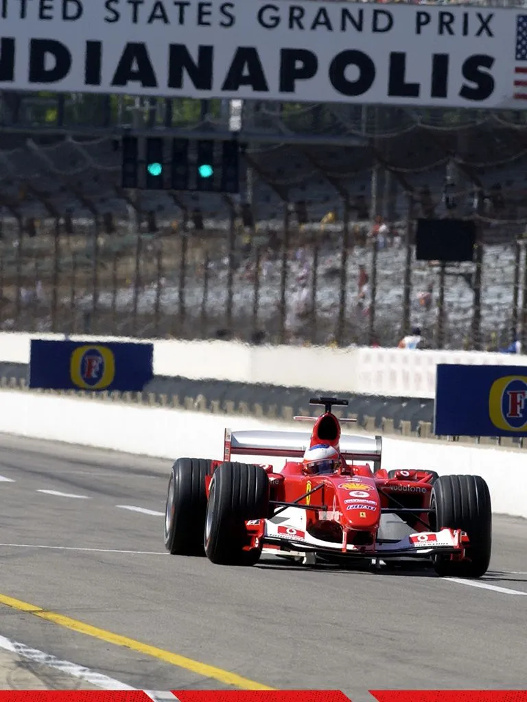

Ο Κινητήρας της Ferrari F2004 – Η Καρδιά μιας Θρυλικής Μηχανής
Η Ferrari F2004 αποτελεί ένα από τα πιο επιτυχημένα μονοθέσια στην ιστορία της Formula 1.
Με 15 νίκες σε 18 αγώνες και το 7ο παγκόσμιο πρωτάθλημα του Michael Schumacher, το αυτοκίνητο αυτό ήταν η απόλυτη έκφραση τεχνικής αρτιότητας και μηχανολογικής τελειότητας.
Στον πυρήνα αυτής της επιτυχίας βρισκόταν ο κινητήρας Ferrari Tipo 053, ένα μηχανολογικό αριστούργημα που συνδύαζε δύναμη, αξιοπιστία και αεροδυναμική αποτελεσματικότητα.
Ο κινητήρας της F2004 ήταν ένας V10 ατμοσφαιρικός κινητήρας χωρητικότητας 2.998 cm³ (3.0 λίτρα), με μέγιστη ισχύ περίπου 865 ίππους στις 18.300 στροφές/λεπτό. Χρησιμοποιούσε συστήματα ψεκασμού και ανάφλεξης Magneti Marelli, ενώ η λίπανση γινόταν μέσω dry-sump συστήματος, επιτρέποντας πολύ χαμηλή τοποθέτηση στο σασί.
Η κατασκευή του ήταν εξ ολοκλήρου από κράμα αλουμινίου και τιτανίου, με εσωτερικά κινούμενα μέρη (στρόφαλος, μπιέλες, βαλβίδες) σχεδιασμένα για ελάχιστη αδράνεια και μέγιστη αντοχή σε εξαιρετικά υψηλές στροφές.
Η διάταξη των κυλίνδρων και η περιεχόμενη γωνία
Η Ferrari επέλεξε για τον κινητήρα της F2004 τη διάταξη V10 με περιεχόμενη γωνία 90° μεταξύ των δύο τραπεζών κυλίνδρων. Η επιλογή αυτής της γωνίας δεν ήταν τυχαία, αλλά αποτέλεσμα εκτεταμένης μελέτης δυναμικής, αεροδυναμικής και βάρους.
Στα τέλη της δεκαετίας του 1990 και στις αρχές του 2000, ο V10 αποτέλεσε την «χρυσή τομή» για τη Formula 1. Ο V8, αν και ελαφρύτερος, δεν μπορούσε να φτάσει στα ίδια επίπεδα ισχύος, ενώ ο V12, αν και πανίσχυρος, ήταν βαρύτερος και απαιτούσε περισσότερο χώρο και καύσιμο.
Ο V10 πρόσφερε το ιδανικό ισοζύγιο ανάμεσα σε βάρος, ισχύ και κατανάλωση, εξασφαλίζοντας ταυτόχρονα εξαιρετική αξιοπιστία.
Η περιεχόμενη γωνία των 90° επιλέχθηκε κυρίως για λόγους βάρους και αεροδυναμικής.
Η μεγαλύτερη γωνία επιτρέπει στους κυλίνδρους να «απλωθούν» πλατύτερα, χαμηλώνοντας το συνολικό ύψος του κινητήρα και, συνεπώς, το κέντρο βάρους του μονοθεσίου. Αυτό προσφέρει καλύτερη ευστάθεια στις στροφές και αυξημένη πρόσφυση.
Η 90° διάταξη επέτρεψε στη Ferrari να σχεδιάσει πιο συμπαγές πίσω μέρος, με μικρότερους πλευρικούς αεραγωγούς και καλύτερη ροή αέρα προς το διαχύτη.
Παρά τις προκλήσεις εξισορρόπησης που δημιουργεί μια τέτοια γωνία, ο σχεδιασμός του στροφαλοφόρου και οι προηγμένες τεχνικές δόνησης της Ferrari επέτρεψαν έναν εξαιρετικά ομαλό και σταθερό κινητήρα, ακόμα και σε στροφές άνω των 18.000 rpm.
Η Ferrari F2004 ακολούθησε την κλασική διάταξη mid-engine, rear longitudinal, δηλαδή μεσαία-πίσω τοποθέτηση, επιμήκως στον άξονα του αυτοκινήτου.
Ο κινητήρας βρισκόταν ακριβώς πίσω από το κάθισμα του οδηγού και πριν τον πίσω άξονα, τοποθετημένος σε τέτοια θέση ώστε το βάρος του να συμβάλλει στην κεντρική ισορροπία του μονοθεσίου.

Ένα από τα πιο σημαντικά τεχνολογικά χαρακτηριστικά της F2004 ήταν ότι ο κινητήρας λειτουργούσε ως δομικό μέλος του σασί.
Αυτό σημαίνει ότι ο κινητήρας βιδωνόταν απευθείας πάνω στη μονοκόκ καμπίνα από ανθρακονήματα, ενώ στην πίσω πλευρά του συνδεόταν το κιβώτιο ταχυτήτων.
Το κιβώτιο και η πίσω ανάρτηση στηρίζονταν επάνω στον κινητήρα, ο οποίος έτσι μετέφερε δομικά φορτία και λειτουργούσε ως μέρος του πλαισίου.
Αυτός ο σχεδιασμός είχε σημαντικά πλεονεκτήματα όπως μείωση συνολικού βάρους, αφού δεν απαιτούνταν πρόσθετα πλαίσια ή βάσεις στήριξης.
Αύξηση ακαμψίας του πλαισίου, προσφέροντας πιο άμεση απόκριση στην ανάρτηση.
Καλύτερη κατανομή μαζών, με αποτέλεσμα εξαιρετικά ισορροπημένο χειρισμό.
Ο ρόλος της τοποθέτησης στην απόδοση
Η επιλογή της Ferrari να τοποθετήσει τον κινητήρα με αυτό τον τρόπο συνδέεται άμεσα με τη συνολική φιλοσοφία της F2004, όσο το δυνατόν χαμηλότερο βάρος, μικρότερη αεροδυναμική αντίσταση και μέγιστη απόδοση σταθερότητας.
Η χαμηλή τοποθέτηση που επέτρεψε η 90° διάταξη, σε συνδυασμό με το dry-sump σύστημα και τη δομική ένταξη του κινητήρα στο σασί, προσέφερε στη Ferrari την ιδανική δυναμική ισορροπία.
Αυτό εξηγεί γιατί το μονοθέσιο είχε εξαιρετική συμπεριφορά στις στροφές και φαινόταν «κολλημένο» στην άσφαλτο, ακόμα και στις πιο απαιτητικές πίστες.
Ο κινητήρας Ferrari Tipo 053 της F2004 ήταν μια ολοκληρωμένη τεχνολογική φιλοσοφία.
Η V10 διάταξη με γωνία 90° επέτρεψε χαμηλό κέντρο βάρους, άψογη αεροδυναμική ενσωμάτωση και μεγάλη δομική ακαμψία, ενώ η τοποθέτησή του ως stressed member συνέβαλε καθοριστικά στη συνολική απόδοση του μονοθεσίου.
Ο συνδυασμός αυτών των παραγόντων έκανε τη Ferrari F2004 όχι μόνο μια από τις ταχύτερες αλλά και από τις πιο ολοκληρωμένες μηχανές που κατασκευάστηκαν ποτέ στη Formula 1 ένα πραγματικό σημείο αναφοράς στη μηχανολογική ιστορία των αγώνων.


Comments